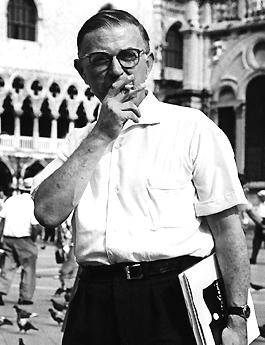
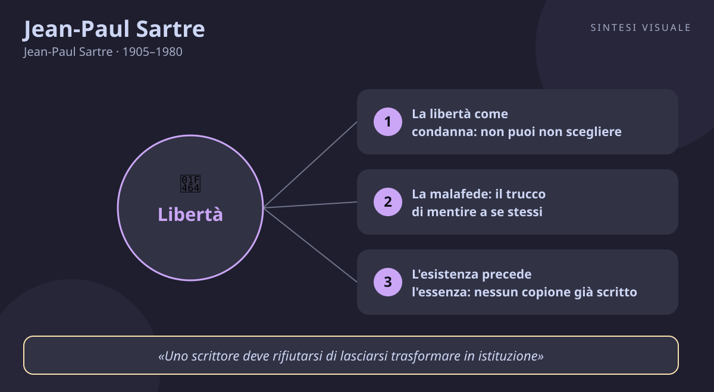

Home / Filosofi / Jean-Paul Sartre

Jean-Paul Sartre
Jean-Paul Sartre · 1905–1980
«L'uomo è condannato a essere libero»
- Responsabilità
- Malafede
- Scelta
- Impegno
💬La massima
«L'uomo è condannato a essere libero. Condannato perché non si è creato da se stesso, e pur tuttavia libero, perché, una volta gettato nel mondo, è responsabile di tutto ciò che fa.»
— Jean-Paul Sartre, L'essere e il nulla, 1943 (in francese: «l'homme est condamné à être libre»); ripresa e spiegata nella conferenza L'esistenzialismo è un umanismo, 1946
La frase sembra un paradosso, ed è proprio questo il suo potere. «Condannato» perché nessuno di noi ha scelto di nascere: ci ritroviamo gettati in un mondo già fatto, in un'epoca, in una famiglia, in un corpo che non abbiamo ordinato. Ma da quel momento in poi, dice Sartre, non possiamo più tirarci indietro: anche non scegliere è una scelta, anche tacere è una risposta, anche obbedire è un atto di cui rispondiamo. Non esistono scuse che tengano — né il carattere («sono fatto così»), né il passato («ho avuto un'infanzia difficile»), né la società («lo fanno tutti»): sono alibi che la coscienza inventa per non guardare in faccia la propria libertà, e Sartre li chiama malafede.
Il rovescio della condanna è vertiginoso: se siamo liberi, siamo responsabili di tutto. Non solo delle nostre azioni, ma del mondo che con esse contribuiamo a creare. Da qui nasce l'angoscia, che per Sartre non è una malattia ma il segno che stiamo prendendo sul serio la nostra condizione: chi non prova mai angoscia, probabilmente sta barando con se stesso. Vale per le grandi svolte — cambiare lavoro, lasciare una relazione, prendere posizione in pubblico — ma anche per le piccole: ogni «non ho scelta» che pronunciamo in ufficio o in famiglia andrebbe riletto come «scelgo di non scegliere, e ne rispondo». La massima non ci consola: ci restituisce le chiavi di casa.
👤Biografia
Jean-Paul Sartre nasce a Parigi il 21 giugno 1905. Il padre, ufficiale di marina, muore quando lui ha quindici mesi; cresce così con la madre Anne-Marie e il nonno materno Charles Schweitzer, professore di tedesco, in una casa piena di libri dove impara prestissimo a leggere e a recitare — il teatro privato del bambino Sartre è la prima scena della sua filosofia. Allievo brillante, entra all'École Normale Supérieure, la scuola d'élite francese; nel 1929, all'esame di abilitazione all'insegnamento, conosce Simone de Beauvoir: lui arriva primo, lei seconda, e da quel giorno restano legati per cinquant'anni da un patto d'amore libero e di fedeltà intellettuale assoluta.
Nel 1933-34 studia in Germania Husserl e Heidegger e scopre la fenomenologia; insegna nei licei di provincia (Le Havre, Laon), scrive romanzi di notte. Richiamato nel 1939, cade prigioniero dei tedeschi nel 1940 e passa nove mesi in un campo in Germania, dove organizza spettacoli e letture per i compagni; rilasciato, torna a Parigi e partecipa alla Resistenza con un piccolo gruppo di sua fondazione. Tra il 1938 e il 1945 pubblica tutto ciò che lo renderà celebre: La nausea, i racconti del Muro, L'essere e il nulla, il dramma Huis clos. Nel dopoguerra fonda con Beauvoir e Merleau-Ponty la rivista Les Temps modernes, scrive nei caffè di Saint-Germain (soprattutto al Flore), diventa il simbolo dell'intellettuale impegnato: contro il colonialismo in Algeria, contro la guerra in Vietnam, accanto agli studenti nel Maggio 1968. Nel 1964 rifiuta il premio Nobel per la letteratura per non «lasciarsi trasformare in istituzione». Instancabile, ironico, generoso con i giovani, lavoratore accanito nonostante la salute fragile e la vista che peggiora fino alla quasi cecità, muore a Parigi il 15 aprile 1980: al funerale, cinquantamila persone lo accompagnano al cimitero di Père-Lachaise, dove sei anni dopo lo raggiungerà Beauvoir.
📌Sintesi del pensiero
Per Sartre l'essere umano non ha una natura già scritta: prima esiste, poi si definisce con le sue scelte — «l'esistenza precede l'essenza». Siamo libertà gettata nel mondo, senza Dio e senza alibi, e proprio per questo responsabili di tutto ciò che facciamo. La coscienza è un «nulla» che dissolve ogni scusa: quando fingiamo di non poter scegliere cadiamo nella malafede, il mentire a se stessi. Vivere da persone autentiche significa riconoscere questa libertà, accettarne l'angoscia e impegnarsi nel mondo con gli altri, perché ogni scelta personale disegna anche l'umanità intera.
🏛️I temi fondamentali
- La libertà come condanna: non puoi non scegliere. È il cuore di tutto: l'uomo non è libero «quando può», è libero sempre, anche quando vorrebbe non esserlo. Il soldato che obbedisce a un ordine ingiusto, l'impiegato che firma un documento scorretto «perché me l'ha chiesto il capo», il partner che resta in una relazione finita «per i figli»: per Sartre stanno tutti scegliendo, e dovranno risponderne. Esempio concreto: al lavoro, sostituire «non ho scelta, me l'hanno imposto» con «scelgo di adeguarmi perché ho bisogno di questo stipendio, e me ne assumo la responsabilità» cambia tutto — non la situazione, ma la dignità con cui la abiti.
- La malafede: il trucco di mentire a se stessi. La mauvaise foi è il capolavoro psicologico di Sartre: non la bugia detta agli altri, ma quella che raccontiamo a noi stessi per sentirci innocenti. L'esempio celebre è il cameriere del caffè descritto ne L'essere e il nulla: si muove un po' troppo da cameriere, sorride un po' troppo da cameriere, come se il ruolo lo possedesse e lui non fosse altro che quello — mentre in realtà sta recitando per dimenticare che potrebbe licenziarsi domani. Esempio concreto: il professionista che dice «io sono timido, non posso parlare in pubblico» usa il carattere come una divisa da cameriere; il giorno in cui ammette «scelgo di non prepararmi perché ho paura del giudizio», la timidezza smette di essere un destino e diventa un problema risolvibile.
- L'esistenza precede l'essenza: nessun copione già scritto. Non esiste «l'uomo» in astratto con un libretto di istruzioni, né un Dio che lo abbia progettato: ciascuno di noi è un progetto aperto, definito solo da ciò che fa. Sartre rovescia duemila anni di pensiero: prima si esiste, poi — vivendo — ci si costruisce un'essenza. Esempio concreto: a quarant'anni cambiare mestiere, a sessanta iscriversi all'università, dopo un fallimento ricominciare da zero non sono «eccezioni bizzarre», sono la normalità sartriana — nessuno è condannato a restare il personaggio che gli altri (o lui stesso) gli hanno cucito addosso a vent'anni.
- Lo sguardo degli altri: «l'inferno sono gli altri». La battuta più fraintesa di Sartre chiude il dramma Huis clos: tre morti chiusi in una stanza, senza carnefice, si torturano a vicenda guardandosi. Non è misantropia: significa che ciascuno di noi esiste anche negli occhi altrui, e quello sguardo può pietrificarci in un ruolo — il «fallito», la «svampita», il «difficile» — dal quale è durissimo uscire. Esempio concreto: il collega etichettato una volta come «quello ansioso» scopre che ogni suo gesto viene letto attraverso quell'etichetta; riconoscerlo permette di rispondere con i fatti invece di recitare, rassegnati, la parte che gli hanno assegnato.
- L'impegno: la libertà si esercita in piazza, non in poltrona. Dopo la guerra Sartre rompe con l'idea dell'intellettuale in torre d'avorio: chi sa e tace, sceglie di stare con chi comanda. Lo scrittore, l'insegnante, il professionista — chiunque abbia voce — deve metterla al servizio della libertà altrui: contro il colonialismo, contro le guerre, accanto agli oppressi. Esempio concreto: firmare una petizione scomoda, difendere in riunione il collega più debole, denunciare una scorrettezza sapendo che costerà caro — sono i gesti quotidiani dell'engagement: la libertà che smette di essere teoria e diventa pratica.
📚Le opere principali
- La nausea (1938). Romanzo-diario di Antoine Roquentin, giovane storico in una cittadina di provincia che scopre l'assurdità dell'esistenza: le cose «sono di troppo», gratuite, senza ragione. Tesi centrale: il mondo non ha senso già pronto, e questa vertigine — la nausea — è il prezzo della lucidità. Conta perché è la porta d'ingresso narrativa all'esistenzialismo: prima del sistema, l'esperienza vissuta.
- L'essere e il nulla (1943). Il trattato filosofico fondamentale, scritto durante l'occupazione nazista: quasi settecento pagine su coscienza, libertà, malafede, sguardo altrui e amore. Tesi centrale: l'uomo è libertà senza fondamento, «inutile passione» tesa a darsi un senso in un mondo che non ne offre alcuno. Conta perché è il sistema completo dell'esistenzialismo sartriano, l'opera che tutto il Novecento dovrà attraversare, per aderirvi o per confutarla.
- Huis clos — A porte chiuse (1944). Dramma in un atto: tre defunti in una stanza senza specchi, condannati a restare insieme per l'eternità. Tesi centrale: il rapporto con gli altri, quando diventa possesso e giudizio, è una prigione senza sbarre. Conta perché vi risuona la battuta più celebre del secolo («l'inferno sono gli altri») e perché dimostra il metodo di Sartre: la filosofia che diventa teatro, davanti a tutti.
- L'esistenzialismo è un umanismo (1946). Trascrizione della celebre conferenza del 1945, tenuta per difendersi dall'accusa di pessimismo e immoralità. Tesi centrale: proprio perché non c'è Dio, l'uomo è interamente responsabile — e questa responsabilità assoluta è un umanesimo, non una disperazione. Conta perché è il manifesto leggibile da chiunque: in poche pagine, tutto Sartre senza tecnicismi.
💬Massime celebri
«L'esistenza precede l'essenza» — L'essere e il nulla (1943), ripresa in L'esistenzialismo è un umanismo (1946). Conta perché è la formula compatta di tutta la sua filosofia: prima vivi, poi diventi ciò che fai — nessun destino ti precede.
«L'inferno sono gli altri» (in francese: «l'enfer, c'est les autres») — dal dramma Huis clos, 1944. Conta perché descrive la trappola dello sguardo altrui: non l'odio per il prossimo, ma la prigione dei ruoli in cui gli altri ci rinchiudono — e in cui ci lasciamo rinchiudere.
«Uno scrittore deve rifiutarsi di lasciarsi trasformare in istituzione» — motivazione resa pubblica per il rifiuto del premio Nobel per la letteratura, 1964. Conta perché Sartre fece ciò che diceva: rifiutò onori, denaro e consacrazione ufficiale per restare libero di criticare tutti, compresi coloro che lo premiavano.
⌛Contesto storico
Sartre nasce a Parigi nel 1905, nel crepuscolo della Belle Époque: l'Europa si crede eterna e pacifica, e nove anni dopo sprofonderà nella Prima guerra mondiale, che lui vive da bambino mentre il mondo degli adulti crolla. Cresce nella Parigi degli anni Venti e Trenta, capitale mondiale dell'arte e delle avanguardie, ma anche laboratorio della crisi: la Grande Depressione del 1929, la disoccupazione, l'ascesa dei fascismi in Italia e in Germania — dove lui stesso studia nel 1933-34, l'anno in cui Hitler prende il potere. In Francia il Fronte Popolare del 1936 illude e divide; poi la Seconda guerra mondiale, la disfatta del 1940, quattro anni di occupazione nazista vissuti a Parigi tra fame, paura e Resistenza.
Il dopoguerra lo trova uomo famoso in un paese da ricostruire: sono gli anni dei «Trenta gloriosi», il boom economico, ma anche della guerra fredda, della bomba atomica e della fine degli imperi — la sconfitta francese in Indocina, poi la sanguinosa guerra d'Algeria (1954-1962), contro la quale Sartre si schiera apertamente, firmando manifesti e rischiando processi. Attorno a lui l'Europa perde il centro del mondo e i giovani del 1968, che lui sostiene scendendo in strada a sessantatré anni, chiedono tutto e subito. Muore nel 1980, all'alba del mondo globalizzato.
I movimenti che lo formano sono la fenomenologia di Husserl e Heidegger, scoperta in Germania; il pensiero di Hegel sulla lotta per il riconoscimento; e il marxismo, con cui dialoga e litiga per tutta la vita. I movimenti che lui trasmette sono l'esistenzialismo come cultura di massa, la letteratura impegnata, il femminismo di Beauvoir — compagna e interlocutrice di una vita — e l'idea stessa di intellettuale militante, che arriva fino alle lotte anticoloniali e al Sessantotto.
🌊L'eredità
Senza Sartre il Novecento penserebbe in un altro modo. La prima erede è colei che gli stava accanto: Simone de Beauvoir, che dall'esistenzialismo ricava Il secondo sesso (1949) — «donna non si nasce, lo si diventa» è la versione femminista di «l'esistenza precede l'essenza» — e fonda così la filosofia femminista contemporanea. Frantz Fanon, psichiatra e militante anticoloniale, porta le categorie sartriane di libertà e sguardo nella lotta dei popoli oppressi; è Sartre a firmare la prefazione ai suoi Dannati della terra. Il Maggio 1968 marcia con le sue parole in tasca, anche quando i giovani lo contestano come «padre» da superare.
Poi arriva la reazione: gli strutturalisti e i postmoderni — Foucault, Lévi-Strauss, Derrida — costruiscono la propria fama dichiarando «morto» il soggetto sartriano, troppo libero e troppo assoluto. Ma è un parricidio apparente: ogni dibattito su responsabilità, identità e impegno continua a muoversi sul terreno che lui ha tracciato. Oggi Sartre ritorna ovunque si parli di scelte senza rete — nelle terapie che lavorano sulla responsabilità personale, nei dibattiti sull'intelligenza artificiale e il libero arbitrio, nella figura dell'intellettuale pubblico che prende posizione. Il filosofo che voleva essere «un uomo tra gli uomini» è rimasto, paradossalmente, un classico: il Novecento non ha ancora finito di fare i conti con la sua condanna alla libertà.
🌍Esempi di oggi
- Il collega che ripete «non ho scelta». In riunione approva un piano che giudica sbagliato e si giustifica: «l'ha deciso il capo, io eseguo». Riletto con Sartre, sta scegliendo l'obbedienza per proteggere stipendio e tranquillità — scelta legittima, ma sua. Ammetterlo («scelgo di adeguarmi, per ora») gli restituisce dignità e, un giorno, la forza di proporre un'alternativa invece di lamentarsi al bar.
- La studentessa e la facoltà dei genitori. Si iscrive a medicina perché «in famiglia si è sempre fatto così», pur sognando l'accademia di belle arti. Nessuno la obbliga davvero: è lei a firmare, ogni mattina, la rinuncia al proprio desiderio per comprare l'approvazione di casa. Sartre non le direbbe cosa scegliere — le ricorderebbe che sta già scegliendo, e che il conto di quella scelta arriverà comunque, con gli interessi del rimpianto.
- Il profilo social come stanza di Huis clos. Un ragazzo cancella una foto perché «prende pochi like», poi ne pubblica una costruita per piacere agli altri e si sente vuoto. È finito nella stanza senza specchi: esiste solo negli sguardi altrui, che lo fissano in un ruolo da recitare all'infinito. Spegnere il telefono per un pomeriggio e chiedersi «cosa farei se nessuno guardasse?» è il primo passo fuori dall'inferno.
📄
# Jean-Paul Sartre — «L'uomo è condannato a essere libero»
Buongiorno! Oggi incontriamo il filosofo che ha fatto della libertà una condanna e della responsabilità un destino: l'uomo che scriveva nei caffè di Parigi, discuteva con tutti, firmava manifesti, rifiutò il Nobel e trasformò l'esistenzialismo nella filosofia del Novecento. Il ritratto qui sopra — Sartre a Venezia, con la sua aria da studente perenne, lo sguardo strabico e la sigaretta sempre accesa — lo mostra negli anni della maturità, quando era già l'intellettuale più famoso (e più discusso) di Francia.
🧠Quiz
Metti alla prova quello che hai letto — rispondi in chat con es. 1B 2A 3C 4D 5A (usa «-» per le risposte che salti):
1 Da quale opera viene la massima «L'uomo è condannato a essere libero»?
2 Perché, secondo Sartre, l'uomo è «condannato» a essere libero?
3 Che cos'è la «malafede», illustrata dall'esempio del cameriere del caffè?
4 Che cosa significa davvero «l'inferno sono gli altri» nel dramma Huis clos?
5 Perché Sartre rifiutò il premio Nobel per la letteratura nel 1964?
✅Soluzioni — tocca per vedere
1B – 2C – 3B – 4A – 5D
🔁Ripasso
- Massima e «condanna» (domande 1-2): se hai sbagliato la 1 o la 2, ricorda il doppio movimento: «condannati» perché gettati nel mondo senza averlo scelto, «liberi» perché da quel momento ogni non-scelta è comunque una scelta di cui rispondiamo — l'opera è L'essere e il nulla, 1943.
- Malafede (domanda 3): se hai sbagliato la 3, ricorda il cameriere che recita il proprio ruolo: la malafede non è mentire agli altri, è usare il carattere o le circostanze come alibi per non riconoscere la propria libertà.
- Sguardo altrui e impegno (domande 4-5): se hai sbagliato la 4 o la 5, ricorda i due volti degli altri: lo sguardo che ci pietrifica in un ruolo (l'inferno di Huis clos) e la coerenza che rifiuta ogni consacrazione ufficiale (il no al Nobel) per restare libera di criticare tutti.
🖼️In un colpo d’occhio

Tocca l’immagine per ingrandirla.